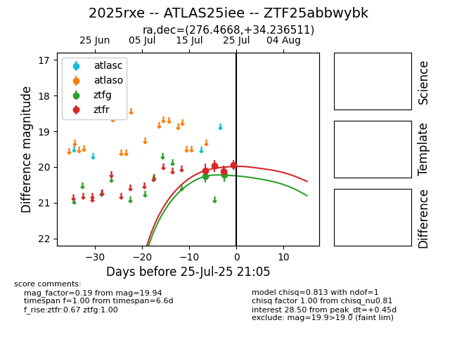

Target 2025rxe at 2025-07-25 21:05, see:
FINK: fink-portal.org/2025rxe
Lasair: lasair-ztf.lsst.ac.uk/objects/2025rxe
ALeRCE: alerce.online/object/2025rxe
TNS: wis-tns.org/object/2025rxe
YSE: ziggy.ucolick.org/yse/transient_detail/2025rxe
alt names
ZTF25abbwybk (ztf,fink)
2025rxe (tns,yse)
ATLAS25iee (atlas)
coordinates:
equatorial (ra, dec) = (276.4668,+34.23651)
galactic (l, b) = (62.1095,+19.78328)
photometry
last ztfg=20.22, ztfr=19.94
2 ztfg, 4 ztfr detections
